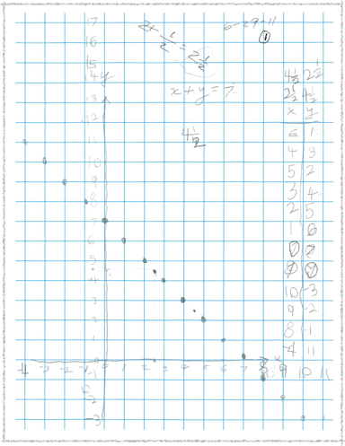
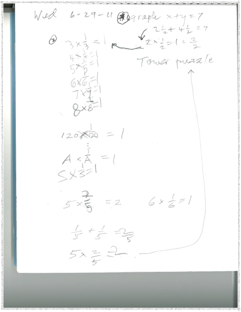
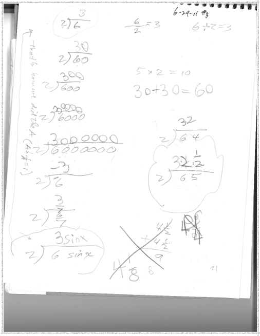
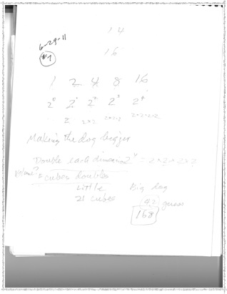
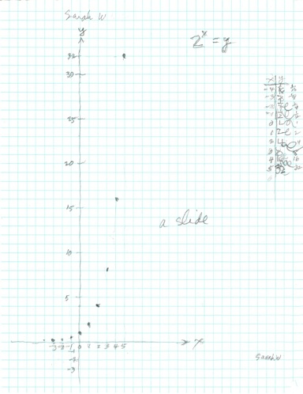

Sarah W, age 6, comes from CA to work with Don for 5 days- Day 1
(her mother lived in Champaign 30 years ago when she worked with Don)
Day 1: Wednesday 29 June 2011
1. Don had her graph x+y=7 (she would turn 7 in 2 weeks). Sarah had never graphed like this before. Don doesn’t talk too much, but asked her for two numbers that add to 7. He made the x- and y- axes, and put the numbers on the lines along the axes. Then he showed her how to plot the point (6,1). We start at (0,0), move along the x-axis to the right 6 units for x, then go up 1 for y. And off she went.

2. When Sarah was adding 2 1/2 + 4 1/2 to get 7 above, Don started a pattern below: 2x1/2 = 1 = 2/2 , then 3x1/3= 3/3= 1, 4x? =1 … and Ax? =1 which she answered 1/A, WOW! Then 5x2/5=2.. Don has found this a powerful idea which can be also used in solving equations like 5y + 3 = 7 -> 5*A/5 + 3 = 7, A=4, so y= 4/5..another way to solve an equation!
Sarah easily used fractions and negative numbers like 8 + ⁻1 = 7 .


3. Don asked Sarah if she could do division. No, she answered. Of course he knew she could do it! He showed her the 3 ways to write “how many 2’s make 6” or 6 divided by 2 in the “box” on the left below, or “6 divided by 2” as a fraction, or you share 6 cookies with 2 people, how many would we each get? He wrote them with the box below:
Sarah's #1 quote: "This is like the A above."
Sarah was looking at the x in sin x above, when she realized she had used the A in Ax1/A = 1 on the previous page. She became aware of the use of a variable, in the equation and in the division problem (which could be written as an equation 6 sin x / 2 = 3 sin x )!
Don also used cookie sharing in the problem of how many 2‘s make 65. Sarah knew that 60/2 was 30. They talked about sharing 5 cookies between 2 of us, how many cookies would we each get. Cutting the cookies, she found each of us would get 2 1/2 cookies. So the answer to 65 divided by 2 she wrote as 32 1/2. See Don’s A Map to Calculus & click on cookie sharing to see how a 2nd grader got an infinite series his way.
4. One of the important things that Don asks of his students is to make up problems. Sarah made up division problems 2)50 … 2)50 with 21 zeros ….2)5 google = 25x10^99 going right, then down the page, then to the left across the bottom of the page, then up left side, finishing to the right, under the original problem, to write the 100 zeros for a google.

5. How old are you Don? Don tells her he was born in 1930, how old am I? She figures it out to be 81.
6. Sarah saw Genny’s puppy, and big dog, made by doubling each dimension. She counted the little cubes that made them. She guessed 42 for the big dog.


7. Powers of 2: Sarah graphed 2^x = y from 2^5=32 to 2^(-4) = 1/16. Notice in the table at the right Sarah does some interesting and wonderful looping at the finish of the numbers and Don felt he had to write the fractions there to make them readable, but not as wonderful as Sarah made them!! Sara called the graph "a slide".
8. Sarah worked on The Tower Puzzle at times this day. Go to A Map To Calculus then click on Hands on Materials in the upper right corner.